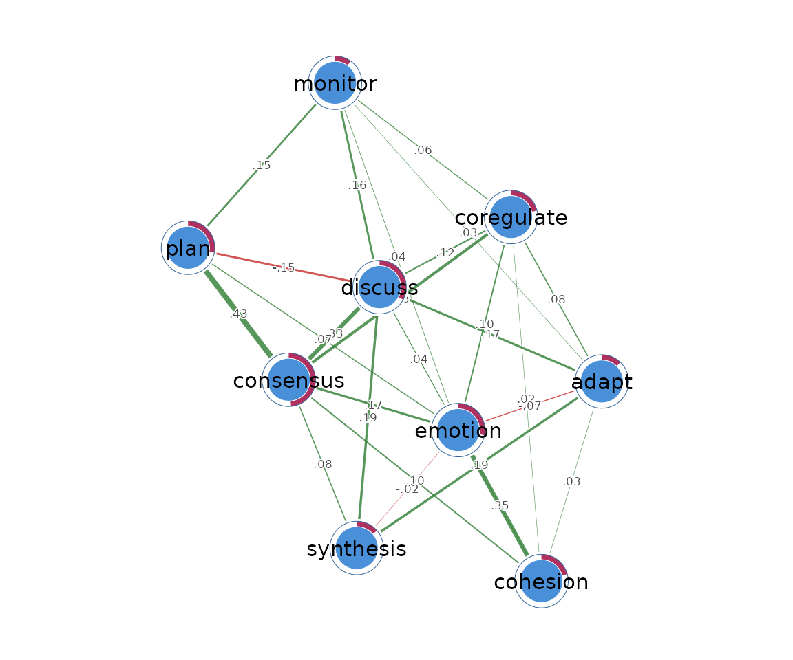
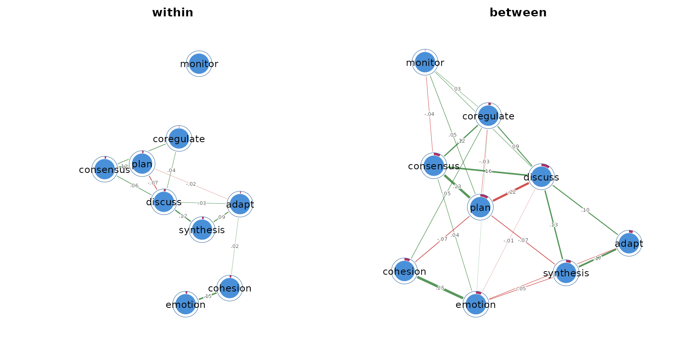

Networks of regulation actions from event logs
Written by Mohammed Saqr and Sonsoles López-Pernas
Source:vignettes/group-networks-from-event-data.Rmd
group-networks-from-event-data.RmdDigital learning environments record what learners do as event logs: who performed which action and when. In collaborative learning, the actions include planning, monitoring, discussing and regulating emotions, and a recurring question is which of these behaviours go together. Students who plan more may also build more consensus, while those who discuss more may plan less. Network models answer such questions for variables measured on the same observations, so an event log is first summarized into the number of times each actor performed each action. A partial correlation network of these frequencies shows which actions co-occur after the frequencies of all other actions are held constant.
What an edge means depends on the unit of observation. When each actor’s whole history is one observation, the network describes differences between actors: those who do more of one action also do more of another. When the history is divided into sessions and each session is compared with the actor’s own average, the network describes variation within actors: in sessions where an actor does more of one action than usual, the actor also does more of another. This article estimates both kinds of network from a log of group regulation actions, compares the networks of high and low achievers, and separates the within- and between-actor parts of the same data.
Data
group_regulation_long, from the optional
tna package, is a synthetic log of students’ regulation
actions during collaborative learning, with 27,533 events from 2,000
students.
-
Actor:
Actor, the student identifier. -
Action:
Action, one of nine regulation actions:adapt,cohesion,consensus,coregulate,discuss,emotion,monitor,planandsynthesis. These are the network nodes. -
Time:
Time, the timestamp of the event, used to divide each history into sessions. -
Grouping:
Achiever, high or low achievement, with 1,000 students in each. -
Other columns:
Group(collaboration group) andCourse, not used here.
data("group_regulation_long", package = "tna")
event_log <- data.frame(group_regulation_long)
head(event_log)
#> Actor Achiever Group Course Time Action
#> 1 1 High 1 A 2025-01-01 08:27:07 cohesion
#> 2 1 High 1 A 2025-01-01 08:35:20 consensus
#> 3 1 High 1 A 2025-01-01 08:42:18 discuss
#> 4 1 High 1 A 2025-01-01 08:50:00 synthesis
#> 5 1 High 1 A 2025-01-01 08:52:25 adapt
#> 6 1 High 1 A 2025-01-01 08:57:31 consensusEach row is one event, and the rows of one actor form that actor’s
history. psychnet() recognizes an event log when the
actor argument names the actor column; the action column is
Action by default.
The model
For actor , occasion and action , the frequency is the number of matching events,
Without sessions, each actor contributes one frequency vector, and the network is estimated from these between-actor frequencies. With sessions, each actor contributes several vectors. Subtracting the actor’s mean, , gives the within-actor deviations, and the actor means carry the between-actor part. Each network is a Gaussian graphical model estimated by the EBIC graphical lasso, so an edge is a partial correlation between two action frequencies with the other seven held constant.
Which actions co-occur across students?
With actor = "Actor", psychnet() counts
each student’s actions and estimates a graphical lasso network of the
counts.
actor_net <- psychnet(data = event_log, actor = "Actor")
summary(actor_net)
#> <psychnet> glasso network
#> nodes: 9 edges: 28 (undirected)
#> lambda: 0.008001 gamma: 0.5
#> optimality (KKT residual): 3.19e-11
#> edge weight: range [-0.154, 0.434], mean 0.104
as.data.frame(actor_net)
#> from to weight
#> 1 adapt cohesion 0.028340228
#> 2 cohesion consensus 0.104456298
#> 3 adapt coregulate 0.083642924
#> 4 cohesion coregulate 0.024349135
#> 5 consensus coregulate 0.225910826
#> 6 adapt discuss 0.171392767
#> 7 cohesion discuss 0.027060667
#> 8 consensus discuss 0.329359608
#> 9 coregulate discuss 0.115303519
#> 10 adapt emotion -0.071536621
#> 11 cohesion emotion 0.348144853
#> 12 consensus emotion 0.173584152
#> 13 coregulate emotion 0.102035538
#> 14 discuss emotion 0.044301431
#> 15 adapt monitor 0.027444520
#> 16 coregulate monitor 0.063156831
#> 17 discuss monitor 0.157029937
#> 18 emotion monitor 0.037567027
#> 19 consensus plan 0.434452415
#> 20 coregulate plan -0.007036661
#> 21 discuss plan -0.154478241
#> 22 emotion plan 0.072573204
#> 23 monitor plan 0.146170265
#> 24 adapt synthesis 0.188381634
#> 25 consensus synthesis 0.079776529
#> 26 coregulate synthesis 0.007569019
#> 27 discuss synthesis 0.186580959
#> 28 emotion synthesis -0.020637713The network has 28 of the 36 possible edges, with partial
correlations from -0.154 to 0.434. The strongest joins
consensus and plan (0.434): students who plan
more also reach consensus more often, at equal frequencies of the other
actions. Consensus is also strongly tied to discuss (0.329)
and coregulate (0.226), and cohesion to
emotion (0.348). The strongest negative edge joins
discuss and plan (-0.154): students who
discuss more plan less. Several edges are close to zero, for example
coregulate–plan (-0.007) and
coregulate–synthesis (0.008), and carry no
substantive weight. Consensus building is thus the hub of the regulation
network, linked to both planning and discussion.
Is the fitted network the optimum of its objective?
Any solution of the graphical lasso must satisfy the problem’s optimality (Karush–Kuhn–Tucker) conditions; the amount by which a fitted network violates them is its certificate, and a value near zero shows that the network is the optimum of its objective.
certificate(actor_net)
#> method certificate kind certified
#> 1 glasso 3.188705e-11 kkt TRUEThe violation is , so the network is the graphical-lasso solution at the selected penalty.
What does the network look like?
cograph::splot() draws the network, with green positive
and red negative edges and a ring showing each action’s
predictability.
cograph::splot(actor_net, psych_styling = TRUE)
The figure shows consensus at the centre, with its thick
edges to plan and discuss, and the
cohesion–emotion pair. Node positions come
from a layout algorithm and carry no statistical meaning.
Do high and low achievers differ?
With group = "Achiever", psychnet()
estimates one network per achievement level and returns them
together.
achievement_nets <- psychnet(data = event_log, actor = "Actor",
group = "Achiever")
achievement_nets
#> <psychnet_group> 2 networks by Achiever (method: glasso)
#> group nodes edges n
#> High 9 25 1000
#> Low 9 27 1000
summary(achievement_nets)
#> group nodes edges mean_abs_weight
#> 1 High 9 25 0.1141111
#> 2 Low 9 27 0.1139959The network of high achievers has 25 edges and that of low achievers 27, each from 1,000 students. The mean absolute edge weight is 0.114 in both, so the retained associations are of the same typical size. Centrality shows where the two networks differ:
net_centralities(achievement_nets)
#> <psychnet_centrality_group> 2 groups: High, Low
#>
#> --- High ---
#> node strength expected_influence
#> 1 adapt 0.2557087 0.2557087
#> 2 cohesion 0.4572828 0.4572828
#> 3 consensus 1.4481964 1.4481964
#> 4 coregulate 0.4826224 0.4826224
#> 5 discuss 0.9148080 0.7172144
#> 6 emotion 0.7213529 0.7213529
#> 7 monitor 0.3386263 0.3386263
#> 8 plan 0.7092177 0.5116240
#> 9 synthesis 0.3777409 0.3777409
#>
#> --- Low ---
#> node strength expected_influence
#> 1 adapt 0.5044549 0.4798929
#> 2 cohesion 0.5561617 0.5561617
#> 3 consensus 1.2000886 1.2000886
#> 4 coregulate 0.6383543 0.6383543
#> 5 discuss 1.0808622 0.9531748
#> 6 emotion 0.6868285 0.6868285
#> 7 monitor 0.4027815 0.4027815
#> 8 plan 0.6447291 0.4924798
#> 9 synthesis 0.4415186 0.4415186consensus has the largest strength in both groups, 1.448
among high and 1.200 among low achievers. Among low achievers,
discuss follows closely (1.081), and adapt
(0.504 against 0.256) and coregulate (0.638 against 0.483)
are more connected than among high achievers. The networks of high
achievers are thus more concentrated on consensus building. These are
descriptive differences between two estimated networks; a formal test of
a difference requires a network comparison test
(net_compare()).
cograph::splot(achievement_nets, psych_styling = TRUE)
The two panels share one layout, so each action has the same position in both.
Which actions co-occur within students?
With time = "Time", psychnet() divides each
student’s history into sessions, starting a new session after a pause
longer than time_threshold seconds, here five minutes. The
timestamps define the sessions only; no lagged or temporal effect is
estimated. With standardize = TRUE, the default, each
session’s counts are centred on the student’s mean, and one network is
estimated from the pooled deviations.
within_net <- psychnet(data = event_log, actor = "Actor", time = "Time",
time_threshold = 300)
summary(within_net)
#> <psychnet> glasso network
#> nodes: 9 edges: 14 (undirected)
#> lambda: 0.0288 gamma: 0.5
#> optimality (KKT residual): 1.30e-12
#> edge weight: range [-0.074, 0.148], mean 0.042
as.data.frame(within_net)
#> from to weight
#> 1 adapt cohesion 0.020792318
#> 2 cohesion coregulate 0.004241206
#> 3 consensus coregulate 0.057999059
#> 4 adapt discuss 0.033506053
#> 5 consensus discuss 0.058347732
#> 6 coregulate discuss 0.038807994
#> 7 cohesion emotion 0.147896226
#> 8 coregulate monitor 0.004845725
#> 9 adapt plan -0.015897821
#> 10 cohesion plan -0.005337637
#> 11 consensus plan 0.116101114
#> 12 discuss plan -0.073852486
#> 13 adapt synthesis 0.089102215
#> 14 discuss synthesis 0.116874946
certificate(within_net)
#> method certificate kind certified
#> 1 glasso 1.296872e-12 kkt TRUEThe within-student network has 14 edges, half as many as the
between-student network, and a larger penalty
().
Its strongest edge joins cohesion and emotion
(0.148): in sessions where a student expresses more cohesion than usual,
the student also expresses more emotion than usual.
discuss–synthesis (0.117) and
consensus–plan (0.116) follow, and
discuss–plan is again negative (-0.074). The
certificate,
,
shows that the network is the optimum of its objective. The
within-student associations are weaker than the between-student ones,
and only part of the between-student structure is repeated from session
to session.
cograph::splot(within_net, psych_styling = TRUE)
How do the within- and between-student networks compare?
With standardize = FALSE, psychnet() keeps
both parts of the session data: the within-student network of the
deviations and the between-student network of the students’ mean session
counts.
multilevel_nets <- psychnet(data = event_log, actor = "Actor", time = "Time",
time_threshold = 300, standardize = FALSE)
multilevel_nets
#> <psychnet_multilevel> glasso networks (within + between)
#> actors: 2000 occasions: 12305
#> within : 9 nodes, 14 edges
#> between: 9 nodes, 24 edgesThe five-minute rule divides the 2,000 histories into 12,305 sessions. The within-student network has 14 edges and the between-student network 24. More associations hold between students’ average profiles than between their session-to-session fluctuations. A plot shows the two networks side by side.
cograph::splot(multilevel_nets, psych_styling = TRUE)
The decomposition separates the two sources of covariance; it is not a random-effects model.
Reporting the analysis
A report names the actor, action and time columns, defines the occasion and the session rule, states whether the network describes differences between actors or variation within them, and gives the estimator and its settings. It also states that sessions defined by timestamps do not make the network temporal.
In this analysis, 27,533 events from 2,000 students gave a between-student network of 28 edges, with consensus building as its hub. High and low achievers had networks of 25 and 27 edges with the same mean absolute weight. A five-minute session rule gave 12,305 sessions, a within-student network of 14 edges and a between-student network of 24 edges.
Assumptions and when to use which network
- The between-actor network (
actoronly) answers how students who differ in one action differ in others. It needs one observation per student and many students. - The within-actor network (
timeorsession,standardize = TRUE) answers how an actor’s actions vary together from session to session. It needs several sessions per actor, and the session rule should be fixed in advance and checked for sensitivity. -
standardize = FALSEkeeps both, which shows whether an association is a difference between actors, a variation within them, or both. - Counts are skewed and the graphical lasso assumes approximate
normality; the nonparanormal model (
method = "huge") is a sensitivity check. - Edges are associations between action frequencies, not between individual events, and not causal effects. For the order in which actions follow one another, transition network analysis is the appropriate model.